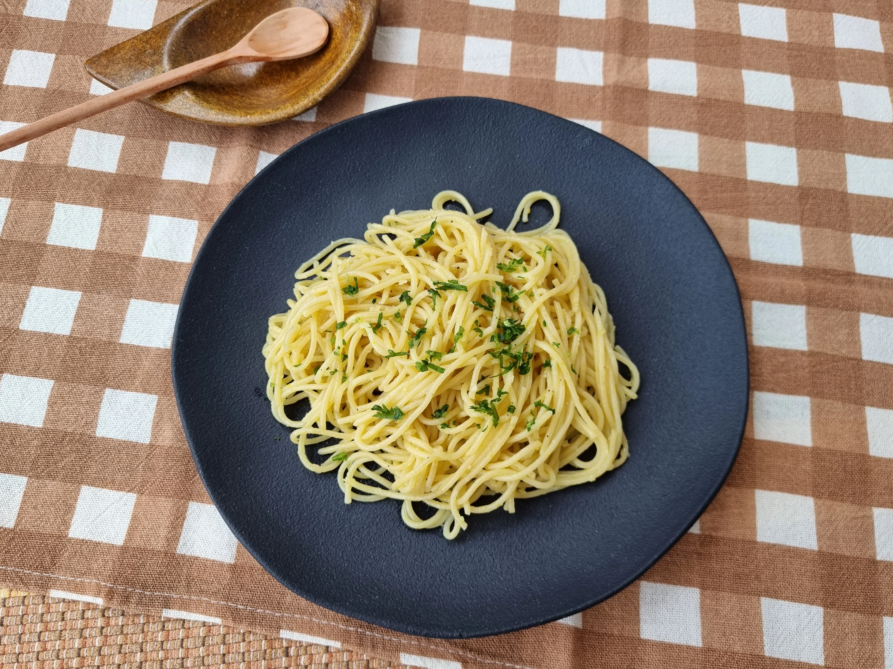

Macarrão ao alho e óleo

Ingredientes:
- 5 dentes de alho amassados.
- 1 colher de sopa de manteiga.
- 5 colheres de sopa de óleo.
- Sal a gosto.
Modo de preparo:
- Amasse bem o alho juntamente com o sal, formando uma pasta.
- Em uma frigideira, coloque o alho amassado e o óleo.
- Frite em fogo médio sem deixar o alho queimar, só dourar.
- Acrescente a manteiga e deixe ferver um pouco, só para incorporar bem o sabor, mexendo sempre.
- Coloque sobre o macarrão imediatamente.